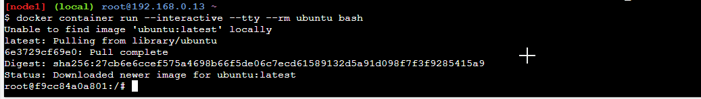
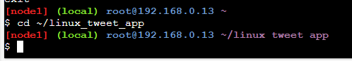
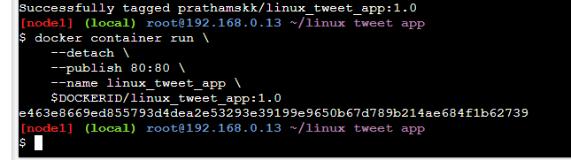
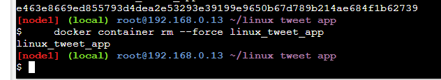

Docker Basics
Initial Setup
Open https://labs.play-with-docker.com in your preferred browser
{kind=link}
Click Start
{kind=link}
Click on Add New Instance
{kind=link}
If you see this You are now succesfully controlling your own temporary machine with alpine Linux and docker
Info
Alpine Linux is a Linux distribution designed to be small, simple and secure
Run some simple Docker containers
There are different ways to use containers. These include:
- To run a single task: This could be a shell script or a custom app.
- Interactively: This connects you to the container similar to the way you SSH into a remote server.
- In the background: For long-running services like websites and databases.
In this section you'll try each of those options and see how Docker manages the workload.
Run a single task in an Alpine Linux container
- In this step we're going to start a new container
- tell it to run the
hostnamecommand. -
The container will start, execute the
hostnamecommand, then exit. -
Run the following command in your Linux console.
- The output below shows that the
alpine:latestimage could not be found locally. -
When this happens, Docker automatically pulls it from Docker Hub.
-
After the image is pulled, the container's hostname is displayed (d161753ccebf in the example below).
-
Docker keeps a container running as long as the process it started inside the container is still running.
- In this case the
hostnameprocess exits as soon as the output is written. - This means the container stops. -
However, Docker doesn't delete resources by default, so the container still exists in the
Exitedstate. -
List all containers.
{kind=link}
- Notice that your Alpine Linux container is in the
Exitedstate.
{kind=link}
> **Note:** The container ID *is* the hostname that the container displayed. In the example above it's `d161753ccebf`.
- Containers which do one task and then exit can be very useful.
- You could build a Docker image that executes a script to configure something.
- Anyone can execute that task just by running the container - they don't need the actual scripts or configuration information.
Run an interactive Ubuntu container
-
You can run a container based on a different version of Linux than is running on your Docker host.
-
In the next example, we are going to run an Ubuntu Linux container on top of an Alpine Linux Docker host (Play With Docker uses Alpine Linux for its nodes).
-
Run a Docker container and access its shell.
 -
In this example, we're giving Docker three parameters:
--interactivesays you want an interactive session.--ttyallocates a pseudo-tty.--rmtells Docker to go ahead and remove the container when it's done executing.
{kind=link}
Info
A tty is essentially a text input output environment i.e basically a shell.
-
The first two parameters allow you to interact with the Docker container.
-
We're also telling the container to run
bashas its main process (PID 1). -
When the container starts you'll drop into the bash shell with the default prompt
root@<container id>:/#. -
Docker has attached to the shell in the container, relaying input and output between your local session and the shell session in the container.
-
Run the following commands in the container.
-
ls /will list the contents of the root directory in the container ps auxwill show running processes in the containercat /etc/issuewill show which Linux distro the container is running, in this case Ubuntu 20.04.3 LTS.
{kind=link}
- Type
exitto leave the shell session. -
This will terminate the
bashprocess, causing the container to exit.Note: As we used the
--rmflag when we started the container, Docker removed the container when it stopped. This means if you run anotherdocker container ls --allyou won't see the Ubuntu container. -
For fun, let's check the version of our host VM.
-
You should see:
{kind=link}
- Notice that our host VM is running Alpine Linux,
- yet we were able to run an Ubuntu container.
-
As previously mentioned, the distribution of Linux inside the container does not need to match the distribution of Linux running on the Docker host.
-
However, Linux containers require the Docker host to be running a Linux kernel.
- For example, Linux containers cannot run directly on Windows Docker hosts.
- The same is true of Windows containers
-
they need to run on a Docker host with a Windows kernel.
-
Interactive containers are useful when you are putting together your own image.
- You can run a container and verify all the steps you need to deploy your app, and capture them in a Dockerfile.
You can commit a container to make an image from it - but you should avoid that wherever possible. It's much better to use a repeatable Dockerfile to build your image. You'll see that shortly.
Run a background MySQL container
Background containers are how you'll run most applications. Here's a simple example using MySQL.
-
Run a new MySQL container with the following command.
--detachwill run the container in the background.--namewill name it mydb.-ewill use an environment variable to specify the root password (NOTE: This should never be done in production).
As the MySQL image was not available locally, Docker automatically pulled it from Docker Hub.
{kind=link}
-
As long as the MySQL process is running, Docker will keep the container running in the background.
-
List the running containers.
Notice your container is running.
{kind=link}
-
You can check what's happening in your containers by using a couple of built-in Docker commands:
docker container logsanddocker container top.This shows the logs from the MySQL Docker container.
{kind=link}
Let's look at the processes running inside the container.
```.term1
docker container top mydb
```
You should see the MySQL daemon (`mysqld`) is running in the container.
{kind=link}
- Although MySQL is running, it is isolated within the container because no network ports have been published to the host.
-
Network traffic cannot reach containers from the host unless ports are explicitly published.
-
List the MySQL version using
docker container exec. -
docker container execallows you to run a command inside a container. -
In this example, we'll use
docker container execto run the command-line equivalent ofmysql --user=root --password=$MYSQL_ROOT_PASSWORD --versioninside our MySQL container.You will see the MySQL version number, as well as a handy warning.
{kind=link}
- You can also use
docker container execto connect to a new shell process inside an already-running container. -
Executing the command below will give you an interactive shell (
sh) inside your MySQL container. -
Notice that your shell prompt has changed. This is because your shell is now connected to the
shprocess running inside of your container.
{kind=link}
-
Let's check the version number by running the same command again, only this time from within the new shell session in the container.
-
Notice the output is the same as before.
-
Type
exitto leave the interactive shell session.
{kind=link}
Package and run a custom app using Docker and Dockerfile
use the following git command to clone this repository containing sample application which we will dockerize
{kind=link}
-
In this step you'll learn how to package your own apps as Docker images using a Dockerfile.
-
The Dockerfile syntax is straightforward.
- In this task, we're going to create a simple NGINX website from a Dockerfile.
Build a simple website image
-
Let's have a look at the Dockerfile we'll be using, which builds a simple website that allows you to send a tweet.
-
Make sure you're in the
linux_tweet_appdirectory. -
Display the contents of the Dockerfile.
{kind=link}
{kind=link}
-
Let's see what each of these lines in the Dockerfile do.
- FROM specifies the base image to use as the starting point for this new image you're creating. For this example we're starting from
nginx:latest. - COPY copies files from the Docker host into the image, at a known location. In this example,
COPYis used to copy two files into the image:index.html. and a graphic that will be used on our webpage. - EXPOSE documents which ports the application uses.
- CMD specifies what command to run when a container is started from the image. Notice that we can specify the command, as well as run-time arguments.
- FROM specifies the base image to use as the starting point for this new image you're creating. For this example we're starting from
-
In order to make the following commands more copy/paste friendly
- export an environment variable containing your DockerID (if you don't have a DockerID you can get one for free via Docker Hub).
{kind=link}
copy your docker ID
{kind=link}
-
You will have to manually type this command as it requires your unique DockerID.
export DOCKERID=<your docker id>
{kind=link}
-
Echo the value of the variable back to the terminal to ensure it was stored correctly.
{kind=link}
-
Use the
docker image buildcommand to create a new Docker image using the instructions in the Dockerfile.--tagallows us to give the image a custom name. In this case it's comprised of our DockerID, the application name, and a version. Having the Docker ID attached to the name will allow us to store it on Docker Hub in a later step.tells Docker to use the current directory as the build context
Be sure to include period (
.) at the end of the command.The output below shows the Docker daemon executing each line in the Dockerfile
{kind=link}
-
Use the
docker container runcommand to start a new container from the image you created.As this container will be running an NGINX web server, we'll use the
--publishflag to publish port 80 inside the container onto port 80 on the host. This will allow traffic coming in to the Docker host on port 80 to be directed to port 80 in the container. The format of the--publishflag ishost_port:container_port.docker container run \ --detach \ --publish 80:80 \ --name linux_tweet_app \ $DOCKERID/linux_tweet_app:1.0 -
Any external traffic coming into the server on port 80 will now be directed into the container on port 80.
-
In a later step you will see how to map traffic from two different ports - this is necessary when two containers use the same port to communicate since you can only expose the port once on the host.
-
Click the 80 Button to open the website you deployed
{kind=link}
{kind=link}
{kind=link}
-
Once you've accessed your website, shut it down and remove it.

{kind=link}
Note: We used the
--forceparameter to remove the running container without shutting it down. This will ungracefully shutdown the container and permanently remove it from the Docker host.In a production environment you may want to use
docker container stopto gracefully stop the container and leave it on the host. You can then usedocker container rmto permanently remove it.